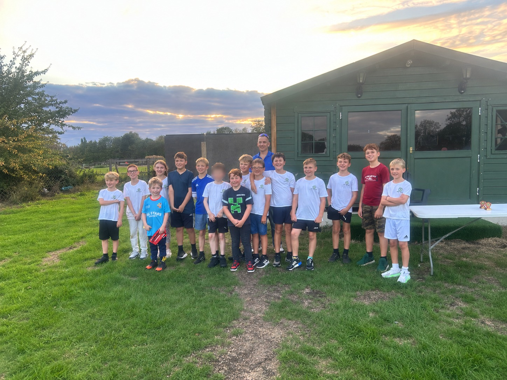
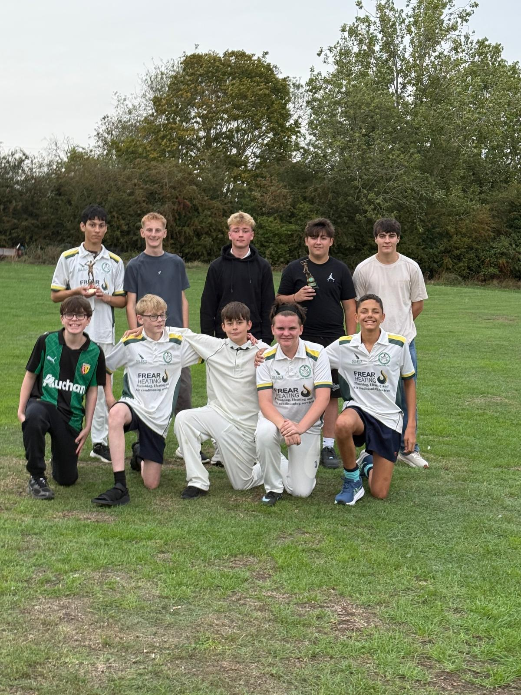

2027 junior programme — details to follow
Age groups, session dates, fees and registration details are not yet confirmed. Families can register their interest now; the 2026 photos below are from last season.
Sutton Cricket Club
Fun, friendly cricket for young players of all abilities. Find out about our pathway, 2027 programme updates and how to get involved.
Age groups, session dates, fees and registration details are not yet confirmed. Families can register their interest now; the 2026 photos below are from last season.
Junior Cricket · 2026
A look back at Sutton CC’s junior cricket groups from the 2026 season.


A place for every young cricketer
Whether your child is picking up a bat for the first time or wants more match experience, our aim is to make cricket welcoming, enjoyable and rewarding.
Planning for 2027
The next junior programme has not yet been announced. We will update this page with confirmed groups, ages, venues, session times, fees and booking details as soon as they are agreed.
New and returning families are welcome to get in touch. Tell us your child's age and whether they've played cricket before, and we can help you find out which opportunities may be suitable when the programme is confirmed.
Details of equipment, supervision and the format of sessions will be provided alongside each confirmed programme. Please contact the club before attending a session that has not yet been announced.
Junior Cricket Sponsor
Proud sponsor of junior cricket at Sutton Cricket Club.

Looking ahead
We welcome new and returning young players. Register your interest with the club and we’ll share the new programme dates, fees and joining details when they are confirmed.
Parents & guardians
Interested in cricket for your child? Send a message to the club. You don't need to provide your child's name or any medical information.
Safeguarding
For safeguarding contacts and any questions about junior cricket at Sutton, please contact the club.